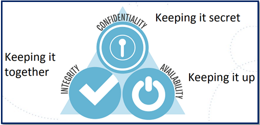

Research Methods and Professional Practice
Key Study Objectives
- Study and reflect on key principles and methods in research based on the scientific method and relevant to various disciplines.
- Examine various research strategies and designs as applicable to projects at hand.
- Develop research competencies, in particular those relating to the collection and analysis of data types to enable a critical design and evaluation of independent research.
- It is important to prepare for the worse and act now.
- Security is everyone’s responsibility. Thus, collaborating more closely with stakeholders outside of security to better understand the business context is vital in promoting security as a collective organisational effort.
- Penetration tests pave the way to build a roadmap of improvements, while patch management is of paramount importance.
- Having an updated data inventory is vital for data classification, and it is also paramount for navigating the world of conflicting rules and managing compliances.
- Having more competent security professionals through training and education can facilitate better security and awareness, leading to fewer breach opportunities.
- Building Secure Foundations at every stage from
- “Security Awareness Training & Security Culture”
- “Integrated Risk Governance”
- “Application Security”
- “Web Security”
- “Cloud Security”
- “Mobile & IoT Security”
- “Back up Strategy”
- and finally, to “Disaster Recovery Plan (RTOs & RPOs)” is the way for avoiding terrible news in cybersecurity.
- #Seminar_01
- #Seminar_03
- #NISM Team Project
#1. Cyber Security is a Board-level Problem
Over the last few years, continuously evolving technology has become one of the most significant challenges faced by cybersecurity, as clearly reflected in figure 1. As the same as technological innovation, methods used by cybercriminals has also evolved. Therefore, it is often difficult to know which methods are being used by cybercriminals in an attack. For organisations to safeguard themselves, it is vital to upgrade their security measures at a similar phase.

Figure 1 (Source: New York Times, Forbes, The Guardian, Tech Radar, BBC, PC Mag – McCandless & Evans, 2021)
Organisations can use skilled, ethical hackers to effectively identify and upgrade areas in their systems that are particularly vulnerable to modern hacking techniques. As a more comprehensive scanning of vulnerabilities, penetration tests pave the way to build a roadmap of improvements for any organisation, highlighting where its security needs to adjust to the desired level of risk. Penetration testing takes advantage of known and unknown vulnerabilities while exploiting the human aspects of cybersecurity (Korpela, 2016).
Therefore, performing penetration tests are crucial for avoiding terrible news as a data breach while ensuring cybersecurity is not the blocker for organisational activities but preferably helping to get a realistic insight into the attack surface of a given application, system, or infrastructure.
Basically, it is going back to the Basics of CIA Triad (figure 2) as an organisation that is prepared to face the evolving digital environment and everything that comes with it — including the ever-present dangers (Akridge,2020).

Figure 2: CIA Triad (Source: OWASP Toronto – Chen, 2018)
So, what does it mean in the technological field that is agile and evolving rapidly? In an era of digital transformation, cloud computing, and a sophisticated threat landscape, regulators and investors are putting organisations under pressure to rethink how organisational functions have organised to identify risks to their business and manage them within an agreed risk appetite and threat landscape.
As a result, Boards of directors are responsible for taking a more active role to manage cyber risks as a principle business risk, which must be collectively owned and managed by the organisation. As cyberattacks could impact an organisation's finance, customers, business model and brand name, engaging cybersecurity more closely during business planning is crucial as integrated risk governance.
Then UK Information Commissioner Elizabeth Denham said, ‘cybersecurity is not an IT issue, it is a boardroom issue. Companies must be diligent and vigilant. They must do this not only because it is their duty under law, but because they have a duty to their customers’ - as her concise appraisal of business responsibility when it comes to cybersecurity (Financier Worldwide, 2017).
The explosion of connectivity across the globe opens new ways for organisations for customer growth and products expansion. However, such opportunities come with recommending regulations and international standards as evolving customer data and intellectual property become new targets for information theft, directly impacting enterprise performances and shareholder value. For example, UK NIS Regulations 2018 12(2)(c) outlines ‘process for regular testing of the effectiveness of security measures, such as by way of vulnerability scanning and penetration testing and then acting upon the results of such testing’ as obligations for relevant digital service providers (RDSPs) (Information Commissioner’s Office, 2021b).
However, navigating the world of conflicting rules, cross-jurisdictional issues, and different compliance is not a simple task and is a matter of significant revenue to companies when it comes to penalties. For example, though NIS concerns digital data, it is also possible that the same incident may also be a personal data breach (as per the UK GDPR). In such circumstances, it is important to notify both NIS competent authority and ICO (Information Commissioner’s Office, 2021a). Another classic example would be the application of GDPR to Financial services firms. The Financial Conduct Authority (FCA) highlights GDPR compliance as a board-level responsibility, where it is crucial to have evidence demonstrating the steps that Financial services firms have taken to comply while treating customers fairly central to both GDPR and the FCA’s rules (FCA, 2018).
Considerably, information classification involving taking an inventory of information assets that organisation stores and processes and identifying the sensitivity of that information for categorisation are a critical part of information security compliance programme (Brodin, 2019).
Going back to my experiences (in my previous workplace), as the Infrastructure team lead, I failed to see the importance of comprehensive scanning of vulnerabilities when the ERP project moved to the Cloud initially in 2017 connecting four global locations.
Simultaneously, transitioning or implementing workloads into the Cloud without a strong strategy to manage cyber risks or non-compliance with regulatory requirements has never occurred to us as vulnerabilities that could negatively impact the organisation. Surprisingly this was not even highlighted in our annual IT Audit, so the topic of cybersecurity never reached the top-management level.
Through my current learnings, I understand that although, Cloud adoption means innovation, agility, speed of execution, the context of security has changed. In the Cloud, not all security and compliance controls are inherited or automatic, and lack of clarity in accountability across the value chain makes the Cloud security everyone’s responsibility, as stated in figure3.

Figure 3: Cloud security is everyone’s responsibility (Source: Deloitte, 2021)
Therefore, relevant education and clear clarity in everyone’s responsibility are founding stones for robust IT and risk management.
So, what I now realised as key cybersecurity measures:
(Source: OWASP Toronto – Chen, 2018)
As each step of team development has its own recognizable feelings and behaviours; recognizing a team’s behavioural patterns through Bruce W.Tuckman’s work in the mid-1960s (framework of Forming, Storming, Norming and Performing behavioural patterns) helps to understand why things occurred in specific ways and provide a valuable basis for future team conversations(Stein, n.d.).
Key learning from each group activity is separately highlighted in each of the “Team Presentation” and “Team Project” sections.
Adding new members to the team in each module led me to circulate more around the storming phase when it comes to feelings, but meantime being founding team members led me to dazzle around norming phase when it comes to behaviours.
Reference List:
Akridge, S. (2020) Essential Functions of a Cybersecurity Program. ISACA Journal 4:1-8. Available from: https://www.isaca.org/resources/isaca-journal/issues/2020/volume-4/essential-functions-of-a-cybersecurity-program [Accessed 23 July 2021].
Brodin, M. (2019) A Framework for GDPR Compliance for Small- and Medium-Sized Enterprises.European Journal for Security Research 4: 243-264. DOI: https://doi.org/10.1007/s41125-019-00042-z
Chen, N. (2018) CISO 90 Day Plan. Available from: https://owasp.org/www-chapter-toronto/assets/slides/OWASP_Toronto_-_CISO_90_Day_Plan_-_Nelson_Chen_-_2018-04-28.pdf [Accessed 24 July 2021].
Deloitte (2021) Brave New Cloud: How to get there. Available from: https://www2.deloitte.com/content/dam/Deloitte/dk/Documents/Grabngo/Cloud_Cyber_GnG_vfinal.pdf [Accessed 25 July 2021].
Financier Worldwide (April, 2017) Leading cyber security from the boardroom. Available from: https://www.financierworldwide.com/leading-cyber-security-from-the-boardroom#.YP0cf44zaUk [Accessed 24 July 2021].
Financial Conduct Authority (FCA) (February, 2018) FCA and ICO publish joint update on GDPR. Available from: https://www.fca.org.uk/news/statements/fca-and-ico-publish-joint-update-gdpr [Accessed 24 July 2021].
Information Commissioner's Office (2021) The Guide to NIS: NIS and the UK GDPR. Available from: https://ico.org.uk/for-organisations/the-guide-to-nis/nis-and-the-uk-gdpr/#GDPR-3 [Accessed 23 July 2021].
Information Commissioner's Office (2021) The Guide to NIS: Security requirements. Available from: https://ico.org.uk/for-organisations/the-guide-to-nis/security-requirements/ [Accessed 23 July 2021].
Korpela, K. (2016) Planning for Information Security Testing—A Practical Approach. ISACA Journal 5:1-8. Available from: https://www.isaca.org/resources/isaca-journal/issues/2016/volume-5/planning-for-information-security-testinga-practical-approach [Accessed 23 July 2021].
McCandless, D. & Evans. T (2021) World's Biggest Data Breaches & Hacks. Available from: https://www.informationisbeautiful.net/visualizations/worlds-biggest-data-breaches-hacks/ [Accessed 24 July 2021].
Stein, J. (n.d.) Using the Stages of Team Development. Available from: https://hr.mit.edu/learning-topics/teams/articles/stages-development [Accessed 24 July 2021].
Discussion Topic: Codes of Ethics and Professional Conduct
Pick a case study from the examples provided by the Association of Computing Machinery (ACM).
Review the application of the ethics code to the situation described and highlight the impact on any relevant legal (jurisdictional or non-jurisdictional) and social issues, as well as on the professionalism of the computing professionals involved. You should provide comparisons to the British Computer Society (BCS) Code of Conduct. .
You should demonstrate that you understand the topic covered and ensure you use references to academic literature (including journals, books, and reports).
View Collaborative Learning Discussion 01: "Initial Post & Summary"
Summary Post:
Recognition of health technologies and their role in society is a vital discussion topic.
For this reason, in 2007, the 60th World Health Assembly embraced resolution WHA60.29, covering problems emerging from the improper deployment and use of health technologies and the need to establish emphasis in the selection and management of health technologies (The World Health Organization, 2007).
With the increased use of technologies in healthcare, it is crucial to ensure that technology-driven medical devices are available, accessible, affordable, appropriate, and used safely in society.
Given the criticality of the role, the technology-driven medical devices play in society, having regulated, tested and governed health technology should be coordinated by a designated health technology management in the national governments at all levels of health care.
However, many developing countries and healthcare bodies have to rely mainly on equipment donations due to economic constraints. Although most of these donations are made with good intentions, the outcomes are not always positive if the donations are not properly tested and regulated and if it lacks adequate technical support, leading to many mismanagements in the technology acquisition process (The World Health Organization, 2007). Consequently, effective and efficient technical management of medical devices remains a concern in most low-income countries and middle-income countries as well as healthcare bodies due to bias from a legal and compliance standpoint despite the existence of dedicated, responsible units at the national level.
Thus, this raises the critical question: Who should regulate technologies-driven health equipment? In Corazón's case study, Corazón's efforts to receive approval from multiple countries' medical device regulatory agencies should be vetted carefully, understanding whether these are unbiased approvals or based approvals led by the donations of implantable heart health monitoring devices.
Therefore, simply assuming that Corazón embodies the BCS's goal of carrying out professional responsibilities with due care and diligence under the relevant authority's requirements may not be accurate without in-depth insight into the context.
However, as Kieron also emphasises in the peer posting, the introduction of a "Bug Bounty" scheme demonstrate Corazón's effort to maintain a secure application and the willingness to respect and value alternative viewpoints by accepting honest work criticism.
Nevertheless, in 2016 independent security research group MedSec attempted to attack several St. Jude Medical devices, released partial information about the vulnerabilities to the public, and made significant profits from the venture by working with Muddy Waters. On the other hand, MedSec's concerns regarding St Jude Medical's foot-dragging were not entirely misplaced as there has been virtually no improvement unless there is a major financial or reputational impact in doing so for technologies-driven health equipment technology manufacturers (Macnish & Ham, 2020).
Thus, MedSec/Muddy Waters/St Jude Medical case has two-fold should cybersecurity researchers be safeguarded from legal action such as the effort to sue MedSec by St Jude? How could we ensure that technologies-driven health equipment takes a severe step towards taking actions to test the flaws highlighted by independent researchers rather than foot-dragging with no improvement unless there is a significant financial or reputational impact in doing so?
Here MedSec/Muddy Waters/St Jude Medical case raises another critical question: Would be introducing a "Bug Bounty" be enough to evaluate Corazón's effort to align with BCS's professional competence and integrity? Would it be worthwhile to evaluate the processes undertaken by Corazón to evaluate vulnerability flaws highlighted through the "Bug Bounty" scheme before evaluating its Ethics and Professional Conduct?
Reference List:
ACM Ethics (2018) ACM Code of Ethics and Professional Conduct. Available from: https://www.acm.org/code-of-ethics [Accessed 18 March 2022].
ACM Ethics (N.D.) Case: Medical Implant Risk Analysis. Available from: https://ethics.acm.org/code-of-ethics/using-the-code/case-medical-implant-risk-analysis/ [Accessed 18 March 2022].
BCS (N.D.)) Code of Conduct for BCS Members. Available from: https://www.bcs.org/membership-and-registrations/become-a-member/bcs-code-of-conduct/ [Accessed 18 March 2022].
Macnish, K. & Ham J. V. (2020) Ethics in cybersecurity research and practice. Technology in Society 63. DOI: 10.1016/j.techsoc.2020.101382.
The World Health Organization (2007) The impact of algorithms for online content filtering or moderation. Available from: https://www.who.int/medical_devices/management_use/3_4.pdf [Accessed 24 March 2022].
Tutor General Feedback Comments:
I must stress that this is generic feedback and I am not discussing any one student in particular in this feedback, it is broad points that I have picked up as an over view when I looked at posts as a whole, holistcally. This feedback should also help you now as well as you move towards your first summative for your literature review.
Main Points:
- Cite regularly - Any intext citation needs to be fully listed in the reference list at the end of your written piece as well, using the University of Essex Harvard Referencing system.
- Only add references in your list of references, that have been used in intext citation, [one has to mirror the other]
- When discussing subjective opinion, make it as objective as possible and when expressing subjective opinion also underpin your comments with something factual, [from research] so that the content does not feel as though these are thoughts that are plucked out of thin air.
- Write in a fully academic manner, and so formal, concise syntax [sentence structure]
- Use full words and not contractions and so for example, 'don't' should be does not.
- Keep paragraphs evenly weighted, and so don't have long paragraphs and then short paragraphs.
- When entering into discussion look at the pros and cons of the situtaion and debate and discuss your findings. This will mean you are evaluating your research, analysing your findings and then by looking at the pros and cons of discussion, you will be building your critical writing skills by debating content.
- Remember the academic 'default' font is Arial size 12.
- Double line space your content and have distinct spacing between your paragraphs.
- When using tables or diagrams; it is fine to use sections of tables to underpin a specfic point for example, but it is important to remember that tables are not a subtitute for textually interpreting research. So you can use tables to support a discussion, but a table should not be used instead of a discussion adn writing content. This is really important to remember for your summative. You are expected to dissect imformation and relate the content through structured written debate and discussion.
- Avoid using listing/bullet points in academic written work/essays.
General feedback by:Karen Outram
Literature Review Outline
Assignment Brief:
You can submit a brief outline of your review by the end of this unit to receive formative feedback from your tutor. Your submission should only highlight your plan for the Literature Review.
View Document: "Literature Review Outline Cyber Security in the Danish Transport System"Tutor Feedback Comments:
The literature review formative is laid out to a very good standard. When using speech marks this denotes a quote has taken place, and so only use speech marks in academic writing if it is a quote and cite immediately after the quote. In the final summative don’t use hyphens to break up sentences use punctuation such as commas and full stops.
Generally, though an excellent observation of academic conventions, regarding font, size and use of citation with a supporting reference list. The content is well laid out and is clear to see what direction you are taking for your subject matter and what the intentions are for the final summative.
Syntax/sentence structure is concise and strong and your academic writing style is logical. For your final summative apply your current application to study shown in this formative to the whole summative and ensure that there is strong discussion and debate from lots of different research resources in the final summative.
Feedback by:Karen Outram
Discussion Topic: Case Study: Accuracy of information
Abi is a researcher at an institute and also a statistical programmer. Abi has received a project from a manufacturer to review the nutritional value of a new cereal, Whizzz. Having collected the necessary data, he now needs to perform the appropriate analyses and print the reports for him to send to the manufacturer. Unfortunately, the data Abi has collected seems to refute the claim that Whizzz is nutritious, and, in fact, they may indicate that Whizzz is harmful.
Abi also realises that some other correlations could be performed that would cast Whizzz in a more favourable light. “After all,” he thinks, “I can use statistics to support either side of any issue.”
Ethical Concerns:
- Clearly, if Abi changed data values in this study he would be acting unethically. But is it any more ethical for him to suggest analysing correct data in a way that supports two or more different conclusions?
- Is Abi obligated to present both the positive and the negative analyses?
- Is Abi responsible for the use to which others put his program results?
- If Abi does put forward both sets of results to the manufacturer, he suspects that they will publicise only the positive ones. What other courses of action has he?
You should also highlight legal, social and professional impacts of any choices made. Please note that there are no right or wrong answers here and you may introduce local, as well as international, legislature in your responses.
You should demonstrate that you understand the topic covered and ensure you use references to academic literature (including journals, books, and reports).
View Collaborative Learning Discussion 02: "Initial Post & Summary"
Summary Post:
The case study discussion raised ethical concerns over Abi’s approach and accountabilities as a statistical researcher when analysing the nutritional value of a new cereal Whizzz. From the case study, it is evident that Abi as a statistical researcher, can tamper with data in reporting the nutritional value of Whizz.
According to Frey (2018), the highest obligation for avoiding the use of deceitful or false data lies with each researcher, who should be able to provide comprehensive details regarding the data gathering process and analysis, allowing other researchers to examine and evaluate the rationality of the study and the interpretation of the data analyses.
A medical researcher, Eric Poehlman’s case relates to research misconduct relates to falsified data on the link between obesity and ageing, exemplifies some of the personal, professional, and legal consequences of using misleading data, he was then sentenced to a jail term of 1 year and 1 day with a fine of $180,000 and was banned for life from participating in any federally funded research activities (Interlandi, 2006).
Further, professional institutions for statistical researchers, such as the American Statistical Association (2022) and UK Statistics Authority (2018), outline the criticality of maintaining data and methods integrity for mitigating known or suspected restrictions, flaws, or biases in the data or methods, while evaluating the professional conduct of statistical researchers.
Therefore, even Abi is not a member of a professional institution, from a social, legal and ethical perspective, he is obliged to analyse correct data in a way that supports two or more different conclusions; however, there is not enough literature to support where Abi as a researcher could be accountable if manufacturer, publicise only the favourable results.
As Marzio (2022) stated, implementing a legal framework to safeguard consumers from being misled by organisations for economic benefits is crucial, which would prevent the manufacturer from publicising only the favourable results. Considering the American Society for Nutrition (N.D.), the European Council No 1924/2006 and the Norwegian Consumer Authority (2012), it is a fact that countries act individually and collectively to safeguard consumers by evaluating and dealing with apparent conflicts of interest in complex, twisted relations between nutrition research and marketing.
Reference List:American Society for Nutrition (N.D.) About Us. Available from: https://nutrition.org/about-asn [Accessed 28 April 2022].
American Statistical Association (2022) Ethical Guidelines for Statistical Practice. Available from: https://www.amstat.org/docs/default-source/amstat-documents/ethicalguidelines.pdf?sfvrsn=bdeeafdd_3 [Accessed 28 April 2022].
Frey, B. (2018) Fraudulent and Misleading Data. The sage encyclopedia of educational research, measurement, and evaluation 4. DOI: 10.4135/9781506326139.
Interlandi, J. (Oct 22, 2006) An Unwelcome Discovery. New York Times. Available from: https://www.nytimes.com/2006/10/22/magazine/22sciencefraud.html [Accessed 30 April 2022].
Norwegian Consumer Authority (2012) The Marketing Control Act. Available from: https://www.forbrukertilsynet.no/english/the-marketing-control-act#chapter-1 [Accessed 30 April 2022].
The National Archives (2006) Regulation (EC) No 1924/2006 of the European parliament and of the council. Available from: https://www.legislation.gov.uk/eur/2006/1924/chapter/II [Accessed 30 April 2022].
UK Statistics Authority (2018) Code of Practice for Statistics. Available from: https://code.statisticsauthority.gov.uk/wp-content/uploads/2018/02/Code-of-Practice-for-Statistics.pdf [Accessed 30 April 2022].
Tutor General Feedback Comments:
Thank you so much for your posts!
There are some very imformative, interesting and well thought through dicussion points.
Please see below my feedback to you all as a summary over view regarding my observations from your posts, as follows:
Some good discussions which include criticality and evaluation.
Good to see the use of citation and list of references being used in formative, [for mosts posts] as well as summative. Do get in the habit of citation and reference lists even for formative activity.
Some good research has taken place to respond to peers, this approach will also help develop knowledge for summative.
There is effective concise debate taking place in the posts.
Formatives are written in a formal academic context which is appropriately academically, and it is good to see that this is now automatically taking place in formative as well as summative.
Good reflections regarding how decisions would impact stakeholders.
Also, effective reflections and observations regarding how the scenario will affect the hypothetical person ‘Abi’ at the centre of this situation.
Good reflections regarding ethics and potential impacts regarding this situation, both from an 'abiding by the book' situation and from a moral perspective.
Some good suggestions regarding how Abi could overcome these problems posed.
Effective dynamic discussion, occurring via concise and focused posts.
Good reflections regarding effective due diligence and research occurring first before engaging in an activity relating to the scenario.
Legal issues around the scenario have been effectively reflected upon.
Some excellent peer reflections, reviews and responses.
Accurate quotation of legislation which is integral to a situation like this
Posts are informative, interesting and factual.
An effective reflection regarding dishonesty and misconduct leading to a professor having to resign, as another example of the impacts of over looking or ignoring legalities.
Good recaps regarding what we have studied so far.
Effective reflections regarding bias.
Many thanks with best wishes.
Feedback by:Karen Outram